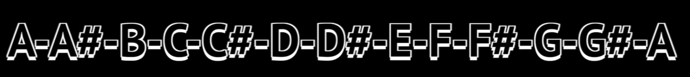
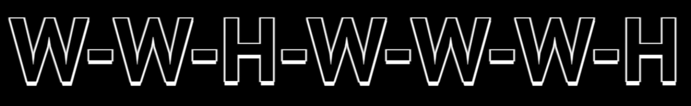
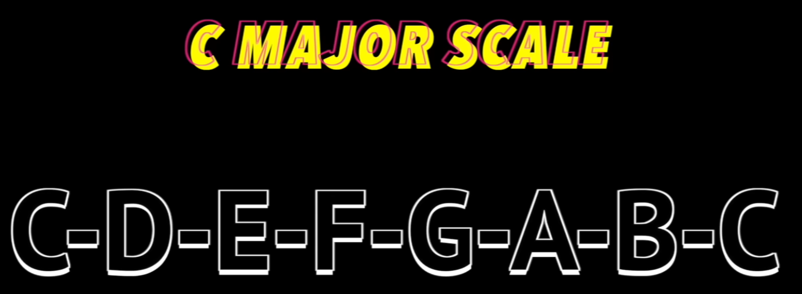

Notes
-
 .
Enharmonic Equivalents
-
"Rasing -> sharp; lowering -> flat".
Scale
-
Series of notes connecting an octave.
Major Scale Formula
-
 .
Minor Scale Formula
-
.
C Major Scale
-
 .
Interval
-
Distance between two notes.
Chords
-
3 or more notes played together.